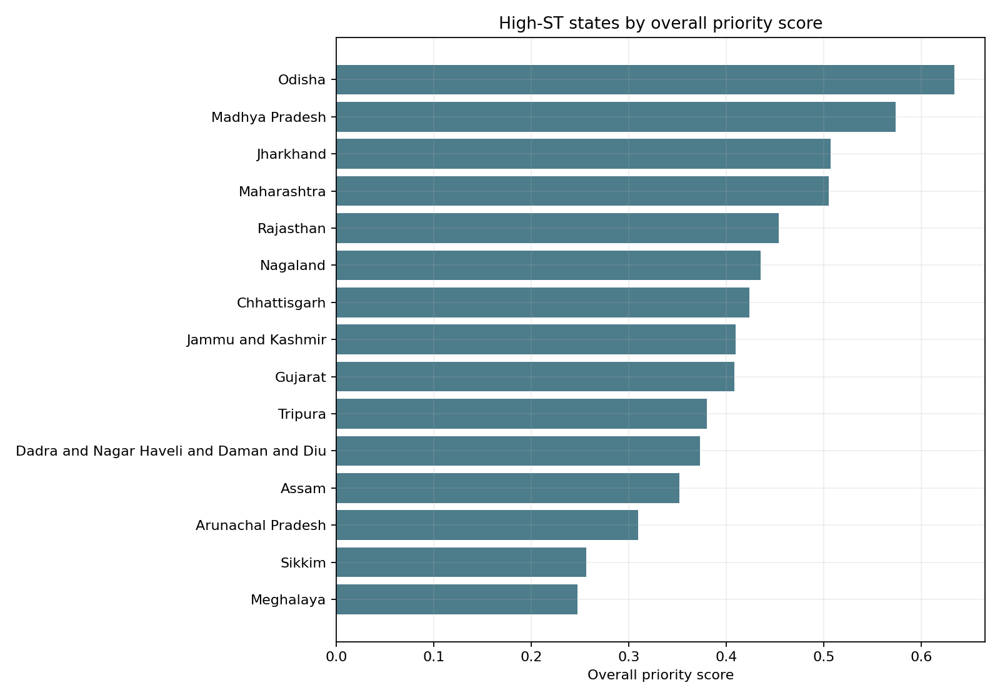
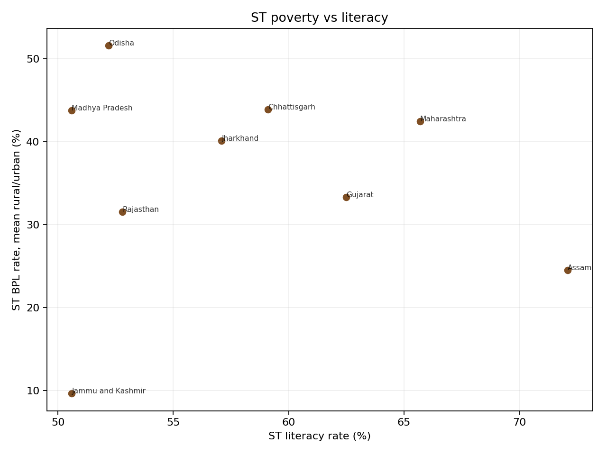

Dropout is a stronger warning signal than enrolment.
Secondary dropout has a clearer positive association with ST poverty than GER does. This suggests that school retention matters more for policy than access alone.
Scheduled Tribe education and livelihood outcomes
This project studies how ST education outcomes relate to employment, poverty, and rural livelihood distress. The strongest policy signal is not simply whether students are enrolled, but whether education is retained, equitably distributed, and connected to livelihood security.
Main question
The analysis compares high-ST states using literacy, literacy gaps, GER, dropout, poverty, labour-force indicators, MGNREG work access, scholarships, and gender parity indicators. The goal is not to prove causality. It is to identify state-level patterns that can guide targeted policy priorities.
Key findings
Secondary dropout has a clearer positive association with ST poverty than GER does. This suggests that school retention matters more for policy than access alone.
Some states with stronger GER still show high poverty or weak livelihood outcomes. This supports an education-livelihood mismatch argument.
A state can look better overall while ST communities remain behind. The literacy gap captures that within-state inequality better than absolute literacy alone.
Unmet MGNREG work demand is positively associated with ST poverty in the high-ST sample, though the evidence is exploratory because poverty coverage is limited.
Priority ranking
The project-created state disadvantage score combines education disadvantage and economic vulnerability. Odisha, Madhya Pradesh, Jharkhand, Maharashtra, and Rajasthan appear near the top because multiple indicators move in the wrong direction together.

Education and poverty
The poverty-literacy relationship is weak in the high-ST sample. This does not mean education is unimportant. It means literacy is too narrow to capture the full education-to-livelihood pathway.

State typology
Chhattisgarh, Gujarat, Jharkhand, Madhya Pradesh, Maharashtra, Odisha, Rajasthan, and Dadra and Nagar Haveli and Daman and Diu fall into this group. These states need education retention policies and livelihood support.
Lakshadweep, Nagaland, and Tripura show weaker labour outcomes relative to their education profile. Policy should connect schooling with local employment pathways.
Jammu and Kashmir stands out for low ST literacy, large literacy gaps, and many low-female-literacy districts, while measured poverty is lower in the available data.
Arunachal Pradesh, Assam, Goa, Manipur, Meghalaya, Mizoram, and Sikkim look comparatively better in the composite score, but still require district-level monitoring.
Policy interpretation
Education-retention crisis: focus on secondary transition support, hostels, transport, scholarships, and dropout tracking.
Literacy-gap states: target ST-general literacy inequality through remedial learning, adult literacy, and local accountability.
Education-livelihood mismatch: connect upper-secondary schooling to skills, placements, public employment, and local economic activity.
Gender disadvantage: track female literacy and female work outcomes, not just girls' enrolment parity.
Livelihood distress: improve MGNREG work access while reducing education costs for poor ST households.
Data and method
The project pipeline standardizes state names, extracts years, cleans numeric indicators, produces cleaned CSVs,
merges state-level variables, and exports an analysis-ready dataset. The main table is
state_analysis_dataset_high_st_states.csv. The findings are exploratory because some datasets use
different years and ST poverty is not available for every high-ST state.
Project code, data cleaning scripts, notebook analysis, and outputs are maintained in the DSM final project repository.